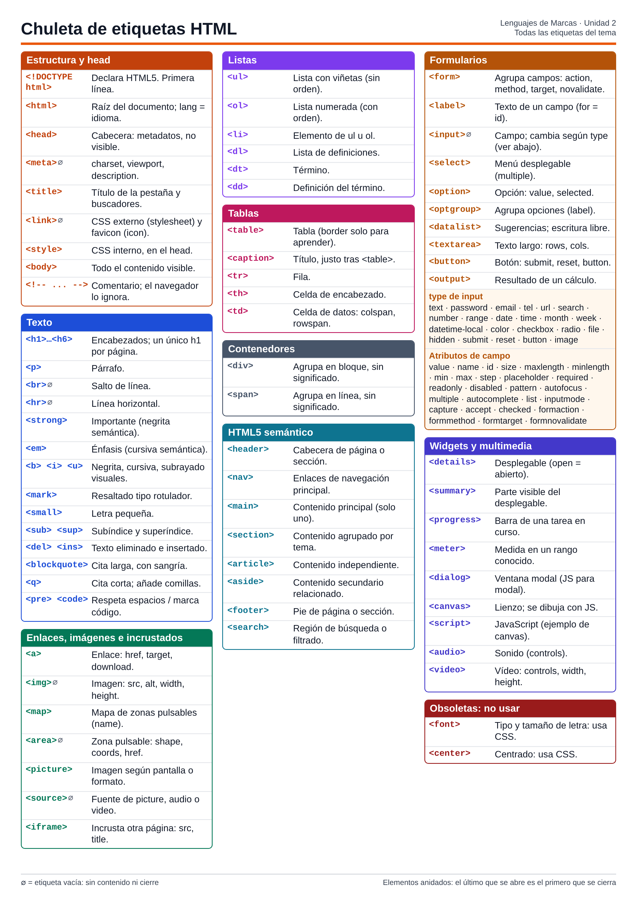

Las piezas que forman cualquier documento HTML5. Lo que va en head no se ve en la página, salvo el título, que aparece en la pestaña.
<!DOCTYPE html>No es una etiqueta propiamente dicha, sino una declaración: indica al navegador que interprete el documento como HTML5. Va siempre en la primera línea.
<!DOCTYPE html><html>Elemento raíz que envuelve todo lo demás. Su atributo lang indica el idioma, lo que ayuda a lectores de pantalla, traductores y buscadores.
<html lang="es"><head>Cabecera del documento. Contiene metadatos, el título y los enlaces a hojas de estilo.
<meta>Metadatos. charset indica la codificación, viewport ajusta la página a pantallas de móvil y description resume la página para los buscadores. Es una etiqueta vacía: no tiene contenido ni cierre.
<meta charset="UTF-8"><title>Texto que aparece en la pestaña del navegador y en los resultados de búsqueda. Es obligatorio en todo documento HTML5.
<title>Mi página</title><link>En el head, enlaza recursos externos: rel="stylesheet" para un archivo CSS y rel="icon" para el favicon. Es una etiqueta vacía: no tiene contenido ni cierre.
<link rel="stylesheet" href="estilos.css"><style>Permite escribir CSS dentro del propio documento, aplicado a toda la página.
<body>Contiene todo lo que el usuario ve y con lo que interactúa.
<!-- ... -->Nota en el código que el navegador ignora. No se puede anidar y no debe ocultar datos sensibles, porque cualquiera puede ver el código fuente.
<!-- nota -->Títulos, párrafos y formato. Las semánticas dicen qué es el texto; b, i y u solo cambian su aspecto.
<h1>…<h6>Encabezados de mayor (h1) a menor (h6) importancia. Cada página debería tener un único h1, su título principal.
<h1>Título</h1><p>Párrafo de texto. El navegador añade espacio antes y después.
<p>Hola</p><br>Obliga a bajar de línea, ya que un salto en el código no se ve en la página. No crea un párrafo nuevo. Es una etiqueta vacía: no tiene contenido ni cierre.
<hr>Línea que separa temas o bloques de contenido. Es una etiqueta vacía: no tiene contenido ni cierre.
<strong>Marca el texto como importante.
<em>Marca el texto con énfasis.
<b> <i> <u>Negrita, cursiva y subrayado puramente visuales, sin significado añadido.
<mark>Resalta el texto como un rotulador fluorescente.
<small>Texto más pequeño: avisos legales, condiciones o notas al pie.
<sub> <sup>Subíndice y superíndice, para fórmulas químicas, exponentes o notas.
H<sub>2</sub>O<del> <ins>Texto eliminado (tachado) e insertado, para mostrar cambios.
<del>20€</del> <ins>15€</ins><blockquote>Cita larga de otra fuente, que el navegador muestra con sangría.
<q>Cita corta en la misma línea. El navegador añade las comillas.
<pre> <code>pre respeta los espacios y saltos de línea tal como se escriben; code marca un fragmento como código.
Llevan a otro sitio o traen contenido a la página. src y href apuntan siempre a una ruta.
<a>Crea un hipervínculo. href indica el destino: una web, mailto:, tel: o #id. target="_blank" abre pestaña nueva y download descarga el archivo.
<a href="#contacto">Contacto</a><img>Inserta una imagen. src es la ruta y alt el texto alternativo obligatorio. Si solo indicas width o height, el otro se calcula sin deformarla. usemap la conecta con un map. Es una etiqueta vacía: no tiene contenido ni cierre.
<img src="foto.jpg" alt="Mi foto"><map>Define el mapa de zonas pulsables de una imagen. La imagen se le conecta con usemap="#nombre".
<map name="plano"><area>Cada región pulsable de un map, con forma rect, circle o poly, que enlaza a un destino. Es una etiqueta vacía: no tiene contenido ni cierre.
<area shape="rect" coords="0,0,150,100" href="a.html" alt="A"><picture>Agrupa varias imágenes posibles para que el navegador elija. Lleva uno o varios source y, al final, un img de reserva.
<source>Cada alternativa. En picture usa media y srcset; en audio y video usa src y type. Es una etiqueta vacía: no tiene contenido ni cierre.
<source src="a.mp3" type="audio/mpeg"><iframe>Incrusta otro documento HTML en un recuadro, como un mapa de Google Maps. Atributos: src, width, height, allowfullscreen y title.
Elige la lista según importe o no el orden, o si son pares término-definición.
<ul>Lista desordenada, para cuando el orden no importa.
<ol>Lista ordenada, para cuando el orden importa, como los pasos de una receta.
<li>Cada elemento de una lista ul u ol.
<ul><li>Café</li></ul><dl>Lista de pares término-definición: glosarios o preguntas y respuestas.
<dt>El término que se define dentro de un dl.
<dd>La definición de un dt. Un dt puede tener uno o varios dd.
<dl><dt>HTML</dt><dd>Lenguaje de marcas</dd></dl>Solo para datos en filas y columnas, no para maquetar. Combina celdas con colspan y rowspan.
<table>Organiza datos en filas y columnas. El atributo border y el antiguo cellpadding se sustituyen hoy por CSS.
<caption>Título de la tabla entera. Va justo después de la apertura de table.
<tr>Una fila de la tabla.
<th>Celda de encabezado; por defecto se ve en negrita y centrada.
<td>Celda de datos normal. colspan="n" ocupa n columnas y rowspan="n" ocupa n filas.
<td colspan="2">Lengua</td>No aportan significado: se usan cuando no encaja ninguna etiqueta semántica.
<div>Contenedor genérico de bloque. Agrupa contenido sin decir qué es, sobre todo para aplicarle CSS o JavaScript.
<span>Selecciona una parte pequeña de texto sin crear un párrafo nuevo.
<span style="color: red;">importante</span>Dicen qué es cada bloque. No cambian nada visualmente: se ven como un div, pero ayudan a buscadores y lectores de pantalla.
<header>Cabecera: logo, título, menú principal.
<nav>Bloque de enlaces de navegación principal.
<main>Contenido principal. Debe haber solo uno por página.
<section>Agrupa contenido relacionado por tema, normalmente con su encabezado.
<article>Contenido con sentido por sí solo: una noticia, una entrada de blog, un producto.
<aside>Contenido secundario: una barra lateral o un dato relacionado.
<footer>Pie: derechos, contacto, redes sociales.
<search>Etiqueta reciente (2024) que marca una región de búsqueda o filtrado.
Recogen datos. form define adónde van y cómo viajan; sin name, un campo no se envía.
<form>Agrupa los campos y los envía juntos. action es la URL de destino; method es get (visible en la URL) o post (oculto). target indica dónde se abre la respuesta y novalidate desactiva la validación.
<form action="/enviar" method="post"><label>Asocia un texto a un campo. Su for debe coincidir con el id del campo; así, al pulsar el texto, el foco pasa al campo.
<label for="nombre">Nombre:</label><input>El campo más versátil: su comportamiento depende de type. Es vacía, así que el texto que lo describe va en un label, nunca dentro de input. Es una etiqueta vacía: no tiene contenido ni cierre.
<input type="email" id="correo" name="correo" required><select>Menú con opciones predefinidas. Con multiple permite elegir varias.
<option>Cada opción de un select o datalist. value puede ser distinto del texto visible; selected la deja elegida por defecto.
<option value="info" selected>Información</option><optgroup>Agrupa varios option bajo un subtítulo, indicado en label.
<datalist>Lista de sugerencias para un input, conectado con list="id". A diferencia de select, se puede escribir otra cosa.
<textarea>Texto de varias líneas. rows y cols fijan su tamaño visible. Su contenido inicial va entre apertura y cierre, no en value.
<button>Botón que puede contener otras etiquetas. Por defecto es submit. También funciona fuera de un form, con JavaScript.
<button type="button">Pulsar</button><output>Muestra el resultado de un cálculo del formulario.
text · password · email · tel · url · search · number · range · date · time · month · week · datetime-local · color · checkbox · radio · file · hidden · submit · reset · button · image
Atributos de los camposvalue · name · id · size · maxlength · minlength · min · max · step · placeholder · required · readonly · disabled · pattern · autofocus · multiple · autocomplete · list · inputmode · capture · accept · checked · formaction · formmethod · formtarget · formnovalidate
Funciones nativas del navegador. dialog y canvas necesitan JavaScript para aprovecharse del todo.
<details>Bloque desplegable sin JavaScript. Empieza cerrado salvo que lleve open.
<summary>Va dentro de details: es lo visible al estar cerrado y actúa como botón.
<progress>Barra de una tarea en curso, con value y max.
<progress value="70" max="100"></progress><meter>Medida dentro de un rango conocido, como una nota, con value, min y max.
<meter value="7" min="0" max="10"></meter><dialog>Ventana modal nativa. Con open se ve como un bloque normal; como modal de verdad necesita JavaScript.
<canvas>Reserva un lienzo (id, width, height) sobre el que solo se dibuja con JavaScript.
<script>Contiene código JavaScript. En esta unidad solo aparece en el ejemplo de canvas; se ve en la Unidad 4.
<audio>Reproduce sonido. controls muestra los botones; dentro van uno o varios source.
<video>Igual que audio, pero con imagen. Conviene fijar width y height.
Solo para reconocerlas en código antiguo. Hoy ese trabajo lo hace CSS.
<font>Elegía el tipo y tamaño de letra en HTML 4.
<center>Centraba contenido en HTML 4.